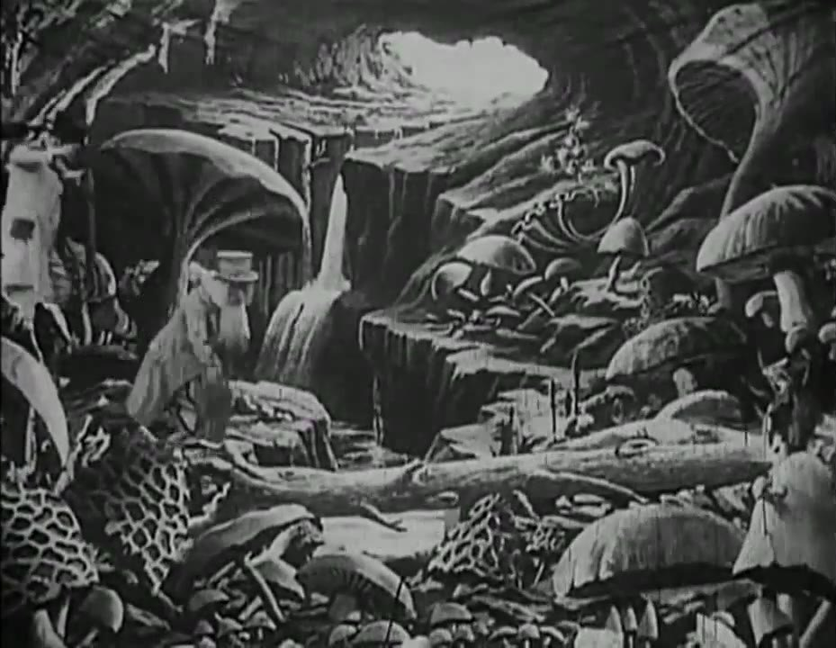

A Trip to the Moon, frame at 8:48
Georges Méliès · 1902 · Silent film, black and white (frame)
The film was shot in the glass-walled studio Méliès had built at Montreuil in 1897, lit by sunlight. He sculpted the Selenite heads, feet and kneecaps in terracotta himself, and a mask maker cast them in cardboard from his plaster moulds. Colour prints were painted with brushes straight onto the film stock in the Thuillier lab in Paris, a studio of two hundred women. An original hand-coloured print was found in 1993 and restored in 2011.